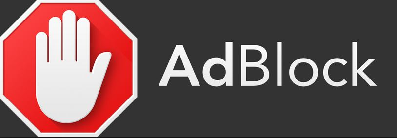

Miten suojautua netissä
Internettiä selailessa voi hämmentyä monestakin asiasta. Mitä tuo nappula tuolla tarkoittaa? Pitääkö klikata vasemmalla olevaa nappulaa vai oikealla olevaa? Ja useimmiten päädytään kysymään nuoremmalta sukupolvelta apua, kuinka selvitä websivujen sokkeloista.
Näistä voit kerätä itsellesi sopivan simppelit neuvot ja ohjeet, joiden avulla löydät tarvittavat tietoturvallisuuteen liittyvät tärkeät asiat.
Ohjeita ja neuvoja
Yleinen neuvo melkein aina on se, että tunnettuja sivuja voidaan lähes aina selata turvallisesti. Näihin kuuluu esimerkiksi uutissivustot kuten Ilta Sanomat tai Iltalehti, pankkisivustot kuten Nordea tai Danske Bank. Sähköpostisivustot kuten Gmail tai vaikkapa Microsoft Office ovat myös lähes turvallisia.
Verkkosivua selailessa kannattaa kiinnittää huomioita mahdollisiin epäilyttäviin mainoksiin sivun vasen- tai oikeanpuoleisessa palkissa. Näissä mainoksissa voidaan mainostaa uhkapelejä, lainoja, käytetään sopimattomia kuvia tai jopa videoita ja myös lomamatkoja. Näitä yleensä löytyy vähemmin turvallisista sivuista. Joskus mainokset vaikuttavat liian hyviltä ollakseen totta, ja ne ovatkin. Nämä voidaan välttää erilaisilla lisäosilla.
Lisäosat
Lisäosat ovat mitä selaimet voivat asentaa, jotta käyttömukavuus nousee ja voidaan muokata selainta omaan käyttöön. Google Chromen ja Firefoxin lisäosat voivat vaihdella, ja siksi kummallekin ohjeet ovat yksilöllisiä.
Suosituimpia lisäosia ovat AdBlockit tai suomennettuna ’’mainoksien estot’’. Nämä lisäosat suodattavat ja estävät noin 95% sivujen mainoksista. Ne joko estävät tai vain piilottavat mainokset automaattisesti sivulla käydessä. Kaikki turha siis jää sivulta pois paitsi sivun oma sisältö. Täytyy ymmärtää, että sivustot sallivat mainokset, sillä mainostajat maksavat sivustoille siitä.
Toinen hyvä lisäosa on Ghostery, joka tekee selaimesta nopeamman ja turvallisemman estämällä mainoksia ja muita sivustoon upotettuja työkaluja esimerkiksi joitain tarkkailu tai seuraus teknologioita. Näitä ei välttämättä tarvitse pelätä,
osa sivuista näistä käyttää niitä saadakseen tietoa analyytikoille, jotka sitten arvioivat ihmisten käyttöä sivustoilla. Ghostery suojaa sinun yksityisyyttä täten ja myös nopeuttaa selainta estämällä nämä latautuvat työkalut. Tätä
ei aina huomaa, mutta sivustot sisältävät aina paljon tekstiä, kuvia ja jopa automaattisesti soivia videoita, jotka vievät hieman aikaa latautuakseen.

Ghosteryn voi ladata niin Chromen lisäosiin kuin Firefoxin.

AdBlock on helppo tapa estää turhia mainoksia ja jopa vaarallisia ponnahdusikkunoita.
Kuten kerroimme, lisäosat eivät ole vain näppäriä tapoja suojata omaa yksityisyyttä tai estää mainoksia, mutta niillä voidaan myös antaa mukavia kosmeettisia muutoksia omaan selaimeen!
Miten tunnistan turvallisen sivun?
Nämä taktiikat, joita huijaussivustot käyttävät, ovat taidokkaita ja tarkkaan harkittuja. Monet sivut saattavat kopioida tunnettua sivustoa laidasta laitaan näyttäkseen mahdollisimman oikealta. Otetaan esimerkin kohteeksi vaikka Danske Bankin etusivu. Huijaussivusto näyttää oikealta ja vaikuttaa turvalliselta, siinä on kaikki oikeat nappulat kohdallaan ja jopa tekstit on kopioitu täydellisesti.
Miten tuosta voidaan huomata erot? Aletaan katsomaan verkkosivun osoitepalkkia. Osoitepalkissa lukee yleisimmin esimerkiksi https://www.danskebank.fi.
Tuossa kannattaa katsoa https:// osaa, joka tarkoittaa sitä, että sivustolla on suojattu yhteys.
Eli pankissa käyminen tai ihan missä tahansa johon tarvitsee käyttäjätunnuksen ja salasanan tarvitaan tuota suojattua yhteyttä. Sinun oma virustorjunta todentaa sivun ja ennen https:// kohtaa näkyy vihreä lukko, jota klikkaamalla näkee todentajan ja esimerkiksi mitä oikeuksia sivustolla on. Nämä tiedot ovat tärkeä tietää, sillä monet sivustot voivat kysyä salasanaasi tai sähköpostiasi, jonka avulla huijauksia ja petoksia aletaan kohdistamaan sinuun. Mutta pelätä ei kannata, turvallisuutta voi pitää yllä simppeleillä konsteilla.
Osoitepalkissa oikea osoite ja vihreä lukko, joka todentaa sivustolla olevan suojatun yhteyden.
Varmista sivuston osoite!
Sivuston osoitteen kirjoittaminen voi mennä väärin tai saat jostain muualta linkin, mikä aina kannattaa tarkistaa ennenkuin menet sinne. Hyvänä vinkkinä voidaan pitää se, että sivut jolla käyt useasti laitetaan kirjainmerkkeihin. Ne voidaan saada helposti esille selaimen auki ollessa, jonka kautta voit vain klikata kirjainmerkkiä ja päästä sivulle nopeasti.
Selaushistoria, salasanat ja tietokoneen päivitys
Selaushistorian poisto aika ajoin on suositeltavaa. Jossain tapauksissa voidaan asettaa niin, että selain ei kerää selaushistoriaa ollenkaan. Näin selaushistorian poistamista ei tarvitse miettiä. Tätä kannattaa käyttää jos on jo varmat sivustot, joissa käyt useasti, valmiina kirjainmerkeissä.
Historian avulla voit palata takaisin joillekin sivustoille, jotka olet unohtanut laittaa kirjainmerkkeihin. Esimerkkinä voi olla vaikka ruokareseptisivut.
Chromen selaushistorian apuvideo.
Firefoxin selaushistorian apuvideo.
Yllä olevista videoista näet miten poistat historian Google Chromessa ja Mozilla Firefoxissa.
Salasanat

Salasanojen merkitys internetissä on kaiken Ä ja Ö. Vahvuus, pituus ja vaikeus ovat tärkeitä salasanan keksimisessä. Liian lyhyt ja helppo on heikko ja täten hyvä kohde niille, jotka saalistavat näitä kyseisiä helppoja salasanoja saadakseen tietoja käsiinsä. Vaikka salasanojen tärkeyttä painotetaan miltei joka paikassa, silti jotkut päätyvät tekemään jonkun liian helpon salasanan.
Kuinka hyvä salasana keksitään?
Hyvä salasana on vähintään 8 merkkiä pitkä. Pitempi salasana on aina parempi kun lyhyt ja sekava. Parempi vaihtoehto on kuitenkin käyttää pitkää salasanaa. Mitä enemmän kirjaimia, sitä hitaampaa salasana on murtaa pelkällä numeronmurskauksella. Muutama lisäkirjain saattaa kasvattaa murtamiseen tarvittavan ajan minuuteista päiviin.
Yksi vinkki olisi miettiä muotojen muistamista. Kirjain W tietokoneesi näppäimistöllä on yksi vaihtoehto. Näin ollen salasana olisi esimerkiksi 1qazse4rfvgy7. Ja sitten kun salasanaa tarvitsee vaihtaa, voi vaikkapa siirtyä yhden näppäinrivin verran oikealle.
https://www.viestintavirasto.fi/attachments/tietoturva/Salasanat_haltuun.pdfYllä olevasta linkistä pääset tarkastelemaan Viestintäviraston pdf-tiedostoa, jossa salasanoista puhutaan alkaen sivulta 5.
Siellä hyvän salasanan pituutta katsotaan olevan jopa 15 merkkiä. Salasanan sijasta 15-merkkinen salalause olisi myös hyvä vaihtoehto. Kirjaimia kuten e, a, o tai s voidaan vastineeksi korvata numeroilla. E olisi 3, A olisi 4, O olisi 0 ja S olisi 5.
Tietokoneen päivitys
Tietokoneen päivittäminen säännöllisesti parantaa turvallisuutta, koneen nopeutta ja myös käytettävyyttä. Tarpeelliset päivitykset tulevat yleensä automaattisesti tai tietokoneesi antaa aina ilmoituksen päivityksen ollessa ladattavissa. Päivityksiä voivat olla eri ohjelmissa, virustorjunnassa, selaimessa, tekstinkäsittelyohjelmissa ja käyttöjärjestelmän omia sisäisiä päivityksiä.
Oletetaan, että käytössäsi on Windows-käyttöjärjestelmä. Täten järjestelmän päivityksistä vastaa Windows Update. Se kokonaisvaltaisesti asentaa tarvittavat päivitykset tietokoneeseen.

Päivityksien asettaminen automaattisesti vapauttaa sinut niiden asentamisesta, mutta on hyvä välillä tarkistaa, että päivitykset ovat asentuneet oikein.
Alla olevasta videosta näet kuinka helppoa päivityksien asetus automaattiseksi on.
Silti täytyy muistaa, että joskus automaattinen päivitys voi johtaa pieniin ongelmiin, jotka voidaan helposti selvittää. Ajatuksena olisi se, että vain tietoturvallisuuteen liittyvät päivitykset voisi asettaa automaattisiksi.
Päivitykset voidaan asettaa automaattisiksi, mutta ohjelma tai järjestelmä ilmoittaa, koska päivitys saapuu tai aiotaan asentaa. Näin olet silloin perillä päivityksistä ja niiden ajankohdista.
Tässä näet opastusvideon Windows Updatesta.